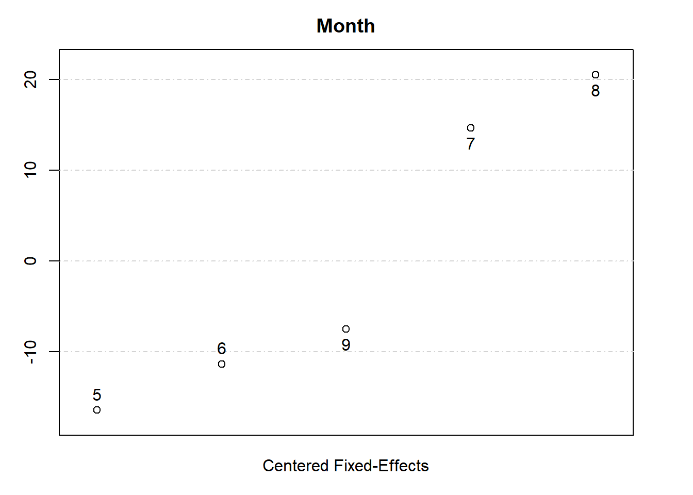

11.5 Panel Data
Panel data (also called longitudinal data) consists of observations of the same entities over multiple time periods. Unlike repeated cross-sections, where new samples are drawn in each wave, panel data tracks the same individuals, households, firms, or regions over time, enabling richer statistical analysis.
Panel data combines cross-sectional variation (differences across entities) and time-series variation (changes within entities over time).
Examples
- Panel Study of Income Dynamics – Follows households annually, collecting data on income, employment, and expenditures.
- Medical Longitudinal Studies – Tracks the same patients over months or years to study disease progression.
- Firm-Level Financial Data – Follows a set of companies over multiple years through financial statements.
- Student Achievement Studies – Follows the same students across different grade levels to assess academic progress.
Structure
- \(N\) entities (individuals, firms, etc.) observed over \(T\) time periods.
- The dataset can be:
- Balanced Panel: All entities are observed in every time period.
- Unbalanced Panel: Some entities have missing observations for certain periods.
Types of Panels
- Short Panel: Many individuals (\(N\)) but few time periods (\(T\)).
- Long Panel: Many time periods (\(T\)) but few individuals (\(N\)).
- Both Large: Large \(N\) and \(T\) (e.g., firm-level data over decades).
11.5.1 Advantages of Panel Data
| Advantage | Explanation |
|---|---|
| Captures individual trajectories | Allows for studying how individuals or firms evolve over time. |
| Controls for unobserved heterogeneity | Fixed effects models remove time-invariant individual characteristics. |
| Stronger causal inference | Difference-in-differences and FE models improve causal interpretation. |
| More efficient estimates | Exploits both cross-sectional and time-series variation. |
11.5.2 Disadvantages of Panel Data
| Disadvantage | Explanation |
|---|---|
| Higher cost and complexity | Tracking individuals over time is resource-intensive. |
| Attrition bias | If certain individuals drop out systematically, results may be biased. |
| Measurement errors | Errors accumulate over time, leading to potential biases. |
11.5.3 Sources of Variation in Panel Data
Since we observe both individuals and time periods, we distinguish three types of variation:
- Overall variation: Differences across both time and individuals.
- Between variation: Differences between individuals (cross-sectional variation).
- Within variation: Differences within individuals (time variation).
| Estimate | Formula |
|---|---|
| Individual mean | \(\bar{x}_i = \frac{1}{T} \sum_t x_{it}\) |
| Overall mean | \(\bar{x} = \frac{1}{NT} \sum_i \sum_t x_{it}\) |
| Overall variance | \(s_O^2 = \frac{1}{NT-1} \sum_i \sum_t (x_{it} - \bar{x})^2\) |
| Between variance | \(s_B^2 = \frac{1}{N-1} \sum_i (\bar{x}_i - \bar{x})^2\) |
| Within variance | \(s_W^2 = \frac{1}{NT-1} \sum_i \sum_t (x_{it} - \bar{x}_i)^2\) |
Note: \(s_O^2 \approx s_B^2 + s_W^2\)
11.5.4 Pooled OLS Estimator
The Pooled Ordinary Least Squares estimator is the simplest way to estimate relationships in panel data. It treats panel data as a large cross-sectional dataset, ignoring individual-specific effects and time dependence.
The pooled OLS model is specified as:
\[ y_{it} = \mathbf{x}_{it} \beta + \epsilon_{it} \]
where:
\(y_{it}\) is the dependent variable for individual \(i\) at time \(t\),
\(\mathbf{x}_{it}\) is a vector of explanatory variables,
\(\beta\) is the vector of coefficients to be estimated,
\(\epsilon_{it} = c_i + u_{it}\) is the composite error term.
\(c_i\) is the unobserved individual heterogeneity.
\(u_{it}\) is the idiosyncratic shock.
By treating all observations as independent, pooled OLS assumes no systematic differences across individuals beyond what is captured by \(\mathbf{x}_{it}\).
For pooled OLS to be consistent and unbiased, the following conditions must hold:
- Linearity in Parameters (A1)
- The relationship between \(y_{it}\) and \(\mathbf{x}_{it}\) is correctly specified as linear.
- Full Rank Condition (A2)
- The regressors are not perfectly collinear across individuals and time.
- Strict Exogeneity (A3)
- No correlation between regressors and error terms: \[ E(\epsilon_{it} | \mathbf{x}_{it}) = 0 \]
- This ensures that OLS remains unbiased.
- Homoskedasticity (A4)
- Constant variance of errors: \[ Var(\epsilon_{it} | \mathbf{x}_{it}) = \sigma^2 \]
- If violated (heteroskedasticity exists), standard errors must be adjusted using clustered robust approach, but OLS is still consistent.
- No Autocorrelation Across Time (A5)
- The error term should not be correlated over time for a given individual: \[ E(\epsilon_{it}, \epsilon_{is}) = 0, \quad \forall t \neq s \]
- If this assumption fails, clustered standard errors are needed.
- Random Sampling (A6)
- Observations are independent across individuals: \[ (y_{i1},..., y_{iT}, x_{i1},..., x_{iT}) \perp (y_{j1},..., y_{jT}, x_{j1},..., x_{jT}) \quad \forall i \neq j \]
- This assumption is often reasonable but not always valid (e.g., in firm-level or country-level panel data).
For pooled OLS to be consistent, we require A3a:
\[ E(\mathbf{x}_{it}'(c_i + u_{it})) = 0 \]
which holds if and only if:
- Exogeneity of \(u_{it}\) (Time-varying error):
\[ E(\mathbf{x}_{it}' u_{it}) = 0 \]- Ensures that regressors are not correlated with the random error component.
- Random Effects Assumption (Time-invariant error):
\[ E(\mathbf{x}_{it}' c_i) = 0 \]- Ensures that unobserved heterogeneity (\(c_i\)) is uncorrelated with regressors. If this assumption fails, pooled OLS suffers from omitted variable bias.
Implication:
If \(c_i\) is correlated with \(\mathbf{x}_{it}\), pooled OLS is biased and inconsistent.
If \(c_i\) is uncorrelated with \(\mathbf{x}_{it}\), pooled OLS is consistent but inefficient.
Variance Decomposition in Panel Data
Since panel data contains both between-entity and within-entity variation, the total variance can be decomposed into:
\[ s_O^2 = s_B^2 + s_W^2 \]
where:
\(s_O^2\) = Overall variance (variation over time and across individuals),
\(s_B^2\) = Between variance (variation between individuals),
\(s_W^2\) = Within variance (variation within individuals over time).
Key Insight:
Pooled OLS does not separate within-individual and between-individual variation.
Fixed Effects models eliminate \(c_i\) and use only within-individual variation.
Random Effects models use both within and between variation.
Robust Inference in Pooled OLS
If the standard assumptions fail, adjustments are necessary:
- Heteroskedasticity: If A4 (Homoskedasticity) is violated, standard errors must be adjusted using:
- White’s Robust Standard Errors (for cross-sectional heteroskedasticity).
- Cluster-Robust Standard Errors (for panel-specific heteroskedasticity).
- Serial Correlation (Autocorrelation): If errors are correlated across time:
- Use Newey-West Standard Errors for time dependence.
- Use Clustered Standard Errors at the Individual Level.
- Multicollinearity: If regressors are highly correlated:
- Remove redundant variables.
- Use Variance Inflation Factor diagnostics.
Comparing Pooled OLS with Alternative Panel Models
| Model | Assumption about \(c_i\) | Uses Within Variation? | Uses Between Variation? | Best When |
|---|---|---|---|---|
| Pooled OLS | Assumes \(c_i\) is uncorrelated with \(x_{it}\) | ✅ Yes | ✅ Yes | No individual heterogeneity |
| Fixed Effects | Removes \(c_i\) via demeaning | ✅ Yes | ❌ No | \(c_i\) is correlated with \(x_{it}\) |
| Random Effects | Assumes \(c_i\) is uncorrelated with \(x_{it}\) | ✅ Yes | ✅ Yes | \(c_i\) is uncorrelated with \(x_{it}\) |
When to Use Pooled OLS?
If individual heterogeneity is negligible
If panel is short (\(T\) is small) and cross-section is large (\(N\) is big)
If random effects assumption holds (\(E(\mathbf{x}_{it}' c_i) = 0\))
If these conditions fail, Fixed Effects or Random Effects models should be used instead.
11.5.5 Individual-Specific Effects Model
In panel data, unobserved heterogeneity can arise when individual-specific factors (\(c_i\)) influence the dependent variable. These effects can be:
- Correlated with regressors (\(E(\mathbf{x}_{it}' c_i) \neq 0\)): Use the Fixed Effects estimator.
- Uncorrelated with regressors (\(E(\mathbf{x}_{it}' c_i) = 0\)): Use the Random Effects estimator.
The general model is:
\[ y_{it} = \mathbf{x}_{it} \beta + c_i + u_{it} \]
where:
\(c_i\) is the individual-specific effect (time-invariant),
\(u_{it}\) is the idiosyncratic error (time-variant).
Comparing Fixed Effects and Random Effects
| Model | Assumption on \(c_i\) | Uses Within Variation? | Uses Between Variation? | Best When |
|---|---|---|---|---|
| Fixed Effects | \(c_i\) is correlated with \(x_{it}\) | ✅ Yes | ❌ No | Unobserved heterogeneity bias present |
| Random Effects | \(c_i\) is uncorrelated with \(x_{it}\) | ✅ Yes | ✅ Yes | No correlation with regressors |
11.5.6 Random Effects Estimator
The Random Effects (RE) estimator is a Feasible Generalized Least Squares method used in panel data analysis. It assumes that individual-specific effects (\(c_i\)) are uncorrelated with the explanatory variables (\(\mathbf{x}_{it}\)), allowing for estimation using both within-group (time variation) and between-group (cross-sectional variation).
The standard Random Effects model is:
\[ y_{it} = \mathbf{x}_{it} \beta + c_i + u_{it} \]
where:
\(y_{it}\) is the dependent variable for entity \(i\) at time \(t\),
\(\mathbf{x}_{it}\) is a vector of explanatory variables,
\(\beta\) represents the coefficients of interest,
\(c_i\) is the unobserved individual-specific effect (time-invariant),
\(u_{it}\) is the idiosyncratic error (time-varying).
In contrast to the Fixed Effects model, which eliminates \(c_i\) by demeaning the data, the Random Effects model treats \(c_i\) as a random variable and incorporates it into the error structure.
11.5.6.1 Key Assumptions for Random Effects
For the Random Effects estimator to be consistent, the following assumptions must hold:
- Exogeneity of the Time-Varying Error (\(u_{it}\)) (A3a)
The idiosyncratic error term (\(u_{it}\)) must be uncorrelated with regressors:
\[ E(\mathbf{x}_{it}' u_{it}) = 0 \]
This assumption ensures that within-period variation in the regressors does not systematically affect the error term.
- Exogeneity of Individual-Specific Effects (\(c_i\)) (A3a)
A crucial assumption of the RE model is that the individual effect (\(c_i\)) is uncorrelated with the explanatory variables:
\[ E(\mathbf{x}_{it}' c_i) = 0 \]
This means that the individual-specific unobserved characteristics do not systematically affect the choice of explanatory variables.
- If this assumption fails, the RE model produces biased and inconsistent estimates due to omitted variable bias.
- If this assumption holds, RE is more efficient than FE because it retains both within-group and between-group variation.
- No Serial Correlation in \(u_{it}\)
The error term (\(u_{it}\)) must be uncorrelated across time:
\[ E(u_{it} u_{is}) = 0, \quad \forall t \neq s \]
If this assumption fails:
Standard errors will be incorrect.
Generalized Least Squares adjustments or cluster-robust standard errors are required.
11.5.6.2 Efficiency of Random Effects
The RE estimator is a GLS estimator, meaning it is BLUE (Best Linear Unbiased Estimator) under homoskedasticity.
| Scenario | Efficiency of RE |
|---|---|
| A4 (Homoskedasticity) holds | RE is the most efficient estimator. |
| A4 fails (Heteroskedasticity or Serial Correlation) | RE remains more efficient than Pooled OLS but is no longer optimal. |
- When the variance of errors differs across individuals, RE can still be used but must be adjusted with robust standard errors.
- If errors are correlated over time, standard Newey-West or cluster-robust standard errors should be applied.
To efficiently estimate \(\beta\), we transform the RE model using Generalized Least Squares.
Define the quasi-demeaned transformation:
\[ \tilde{y}_{it} = y_{it} - \theta \bar{y}_i \]
\[ \tilde{\mathbf{x}}_{it} = \mathbf{x}_{it} - \theta \bar{\mathbf{x}}_i \]
where:
\[ \theta = 1 - \sqrt{\frac{\sigma^2_u}{T\sigma^2_c + \sigma^2_u}} \]
- If \(\theta = 1\), RE becomes the FE estimator.
- If \(\theta = 0\), RE becomes Pooled OLS.
The final RE regression equation is:
\[ \tilde{y}_{it} = \tilde{\mathbf{x}}_{it} \beta + \tilde{u}_{it} \]
which is estimated using GLS.
11.5.7 Fixed Effects Estimator
Also known as the Within Estimator, the FE model controls for individual-specific effects by removing them through transformation.
Key Assumption
If the RE assumption fails (\(E(\mathbf{x}_{it}' c_i) \neq 0\)), then:
- Pooled OLS and RE become biased and inconsistent (due to omitted variable bias).
- FE is still consistent because it eliminates \(c_i\).
However, FE only corrects bias from time-invariant factors and does not handle time-variant omitted variables.
Challenges with FE
- Bias with Lagged Dependent Variables: FE is biased in dynamic models (Nickell 1981; Narayanan and Nair 2013).
- Exacerbates Measurement Error: FE can worsen errors-in-variables bias.
11.5.7.1 Demean (Within) Transformation
To remove \(c_i\), we take the individual mean of the regression equation:
\[ y_{it} = \mathbf{x}_{it} \beta + c_i + u_{it} \]
Averaging over time (\(T\)):
\[ \bar{y}_i = \bar{\mathbf{x}}_i \beta + c_i + \bar{u}_i \]
Subtracting the second equation from the first (i.e., within transformation):
\[ (y_{it} - \bar{y}_i) = (\mathbf{x}_{it} - \bar{\mathbf{x}}_i) \beta + (u_{it} - \bar{u}_i) \]
This transformation:
Eliminates \(c_i\), solving omitted variable bias.
Only uses within-individual variation.
The transformed regression is estimated via OLS:
\[ y_{it} - \bar{y}_i = (\mathbf{x}_{it} - \bar{\mathbf{x}}_i) \beta + d_1 \delta_1 + \dots + d_{T-2} \delta_{T-2} + (u_{it} - \bar{u}_i) \]
where
\(d_t\) is a time dummy variable, which equals 1 if the observation in the time periods \(t\), and 0 otherwise. This variable is for period \(t = 1, \dots, T - 1\) (one period omitted to avoid perfect multicollinearity).
\(\delta_t\) is the coefficient on the time dummy, capturing aggregate shocks that affect all individual in period \(t\).
Key Conditions for Consistency:
Strict Exogeneity (A3):
\[ E[(\mathbf{x}_{it} - \bar{\mathbf{x}}_i)' (u_{it} - \bar{u}_i)] = 0 \]Time-invariant variables are dropped (e.g., gender, ethnicity). If you’re interested in the effect of these time-invariant variables, consider using either OLS or the between estimator.
Cluster-Robust Standard Errors should be used.
11.5.7.2 Dummy Variable Approach
The Dummy Variable Approach is an alternative way to estimate Fixed Effects in panel data. Instead of transforming the data by demeaning (Within Transformation), this method explicitly includes individual dummy variables to control for entity-specific heterogeneity.
The general FE model is:
\[ y_{it} = \mathbf{x}_{it} \beta + c_i + u_{it} \]
where:
\(c_i\) is the unobserved, time-invariant individual effect (e.g., ability, cultural preferences, managerial style).
\(u_{it}\) is the idiosyncratic error term (fluctuates over time and across individuals).
To estimate this model using the Dummy Variable Approach, we include a separate dummy variable for each individual:
\[ y_{it} = \mathbf{x}_{it} \beta + d_1 \delta_1 + ... + d_{T-2} \delta_{T-2} + c_1 \gamma_1 + ... + c_{n-1} \gamma_{n-1} + u_{it} \]
where:
\(c_i\) is now modeled explicitly as a dummy variable (\(c_i \gamma_i\)) for each individual.
\(d_t\) are time dummies, capturing time-specific shocks.
\(\delta_t\) are coefficients on time dummies, controlling for common time effects.
Interpretation of the Dummy Variables
The dummy variable \(c_i\) takes a value of 1 for individual \(i\) and 0 otherwise:
\[ c_i = \begin{cases} 1 &\text{if observation is for individual } i \\ 0 &\text{otherwise} \end{cases} \]
These \(N\) dummy variables absorb all individual-specific variation, ensuring that only within-individual (over-time) variation remains.
Advantages of the Dummy Variable Approach
- Easy to Interpret: Explicitly includes entity-specific effects, making it easier to understand how individual heterogeneity is modeled.
- Equivalent to the Within (Demean) Transformation: Mathematically, this approach produces the same coefficient estimates as the Within Transformation.
- Allows for Inclusion of Time Dummies: The model can easily incorporate time dummies (\(d_t\)) to control for period-specific shocks.
Limitations of the Dummy Variable Approach
- Computational Complexity with Large \(N\)
- Adding \(N\) dummy variables significantly increases the number of parameters estimated.
- If \(N\) is very large (e.g., 10,000 individuals), this approach can be computationally expensive.
- Standard Errors Are Incorrectly Estimated
- The standard errors for \(c_i\) dummy variables are often incorrectly calculated, as they absorb all within-individual variation.
- This is why the Within Transformation (Demeaning Approach) is generally preferred.
- Consumes Degrees of Freedom
- Introducing \(N\) additional parameters reduces degrees of freedom, which can lead to overfitting.
11.5.7.3 First-Difference Approach
An alternative way to eliminate individual-specific effects (\(c_i\)) is to take first differences across time, rather than subtracting the individual mean.
The FE model:
\[ y_{it} = \mathbf{x}_{it} \beta + c_i + u_{it} \]
Since \(c_i\) is constant over time, taking the first difference:
\[ y_{it} - y_{i(t-1)} = (\mathbf{x}_{it} - \mathbf{x}_{i(t-1)}) \beta + (u_{it} - u_{i(t-1)}) \]
This transformation removes \(c_i\) completely, leaving a model that can be estimated using Pooled OLS.
Advantages of the First-Difference Approach
- Eliminates Individual Effects (\(c_i\))
- Since \(c_i\) is time-invariant, differencing removes it from the equation.
- Works Well with Few Time Periods (\(T\) is Small)
- If \(T\) is small, first-differencing is often preferred over the Within Transformation, as it does not require averaging over many periods.
- Less Computationally Intensive
- Unlike the Dummy Variable Approach, which requires estimating \(N\) additional parameters, the First-Difference Approach reduces the dimensionality of the problem.
Limitations of the First-Difference Approach
- Cannot Handle Missing Observations Well
- If data is missing in period \(t-1\) for an individual, then the corresponding first-difference observation is lost.
- This can significantly reduce sample size in unbalanced panels.
- Reduces Number of Observations by One
- Since first differences require \(y_{i(t-1)}\) to exist, the model loses one time period (\(T-1\) observations per individual instead of \(T\)).
- Can Introduce Serial Correlation
- Since we are differencing \(u_{it} - u_{i(t-1)}\), the error term now exhibits autocorrelation.
- This means standard OLS assumptions (independent errors) no longer hold, requiring the use of robust standard errors.
11.5.7.4 Comparison of FE Approaches
| Approach | How it Works | Pros | Cons |
|---|---|---|---|
| Dummy Variable | Includes individual dummies (\(c_i\)) in regression | Intuitive, easy to interpret | Computationally expensive for large \(N\), standard errors may be incorrect |
| Within Transformation (Demeaning) | Subtracts individual mean from each variable | Computationally efficient, correct standard errors | Cannot estimate time-invariant variables |
| First-Difference Approach | Takes time differences to remove \(c_i\) | Simple, works well for small \(T\) | Reduces sample size, introduces autocorrelation |
Key Insights
- The Dummy Variable Approach explicitly models \(c_i\) but is computationally expensive for large \(N\).
- The Within (Demean) Transformation is the most commonly used FE method because it is computationally efficient and produces correct standard errors.
- The First-Difference Approach is useful when \(T\) is small, but it reduces sample size and introduces autocorrelation.
- If data has many missing values, First-Difference is not recommended due to its sensitivity to gaps in observations.
- Time dummies (\(d_t\)) can be included in any FE model to control for time shocks that affect all individuals.
- FE only exploits within variation, meaning only status changes contribute to \(\beta\) estimates.
- With limited status changes, standard errors explode (small number of switchers leads to high variance).
- Treatment effect is non-directional but can be parameterized.
- Switchers vs. Non-Switchers:
- If switchers differ fundamentally, the FE estimator may still be biased.
- Descriptive statistics on switchers/non-switchers help verify robustness.
11.5.7.5 Variance of Errors in FE
FE reduces variation by removing \(c_i\), which affects error variance:
\[ \hat{\sigma}^2_{\epsilon} = \frac{SSR_{OLS}}{NT - K} \]
\[ \hat{\sigma}^2_u = \frac{SSR_{FE}}{NT - (N+K)} = \frac{SSR_{FE}}{N(T-1)-K} \]
Implication:
The variance of the error may increase or decrease because:
\(SSR\) can increase (since FE eliminates between variation).
Degrees of freedom decrease (as more parameters are estimated).
11.5.7.6 Fixed Effects Examples
11.5.7.6.1 Intergenerational Mobility – Blau (1999)
Research Questions
- Does transferring resources to low-income families improve upward mobility for children?
- What are the mechanisms of intergenerational mobility?
Mechanisms for Intergenerational Mobility
There are multiple pathways through which parental income influences child outcomes:
- Genetics (Ability Endowment)
- If mobility is purely genetic, policy cannot affect outcomes.
- Environmental Indirect Effects
- Family background, peer influences, school quality.
- Environmental Direct Effects
- Parental investments in education, health, social capital.
- Financial Transfers
- Direct monetary support, inheritance, wealth accumulation.
One way to measure the impact of income on human capital accumulation is:
\[ \frac{\% \Delta \text{Human Capital}}{\% \Delta \text{Parental Income}} \]
where human capital includes education, skills, and job market outcomes.
Income is measured in different ways to capture its long-term effects:
- Total household income
- Wage income
- Non-wage income
- Annual vs. Permanent Income (important distinction for long-term analysis)
Key control variables must be exogenous to avoid bias. Bad Controls are those that are jointly determined with the dependent variable (e.g., mother’s labor force participation).
Exogenous controls:
Mother’s race
Birth location
Parental education
Household structure at age 14
The estimated model is:
\[ Y_{ijt} = X_{jt} \beta_i + I_{jt} \alpha_i + \epsilon_{ijt} \]
where:
\(i\) = test (e.g., academic test score).
\(j\) = individual (child).
\(t\) = time.
\(X_{jt}\) = observable child characteristics.
\(I_{jt}\) = parental income.
\(\epsilon_{ijt}\) = error term.
Grandmother’s Fixed-Effects Model
Since a child (\(j\)) is nested within a mother (\(m\)), and a mother is nested within a grandmother (\(g\)), we estimate:
\[ Y_{ijgmt} = X_{it} \beta_{i} + I_{jt} \alpha_i + \gamma_g + u_{ijgmt} \]
where:
\(g\) = Grandmother, \(m\) = Mother, \(j\) = Child, \(t\) = Time.
\(\gamma_g\) captures both grandmother and mother fixed effects.
The nested structure controls for genetic and fixed family environment effects.
Cluster standard errors at the family level to account for correlation in errors across generations.
Pros of Grandmother FE Model
Controls for genetics + fixed family background
Allows estimation of income effects independent of family background
Cons
Might not fully control for unobserved heterogeneity
Measurement errors in income can exaggerate attenuation bias
11.5.7.6.2 Fixed Effects in Teacher Quality Studies – Babcock (2010)
The study investigates:
How teacher quality influences student performance.
Whether students adjust course selection behavior based on past grading experiences.
How to properly estimate teacher fixed effects while addressing selection bias and measurement error.
The initial model estimates student performance (\(T_{ijct}\)) based on class expectations and student characteristics:
\[ T_{ijct} = \alpha_0 + S_{jct} \alpha_1 + X_{ijct} \alpha_2 + u_{ijct} \]
where:
\(T_{ijct}\) = Student test score.
\(S_{jct}\) = Class-level grading expectation (e.g., expected GPA in the course).
\(X_{ijct}\) = Individual student characteristics.
\(i\) = Student, \(j\) = Instructor, \(c\) = Course, \(t\) = Time.
\(u_{ijct}\) = Idiosyncratic error term.
A key issue in this model is that grading expectations may not be randomly assigned. If students select into courses based on grading expectations, simultaneity bias can arise.
To control for instructor and course heterogeneity, the model introduces teacher-course fixed effects (\(\mu_{jc}\)):
\[ T_{ijct} = \beta_0+ S_{jct} \beta_1+ X_{ijct} \beta_2 +\mu_{jc} + \epsilon_{ijct} \]
where:
\(\mu_{jc}\) is a unique fixed effect for each instructor-course combination.
This controls for instructor-specific grading policies and course difficulty.
It differs from a simple instructor effect (\(\theta_j\)) and course effect (\(\delta_c\)) because it captures interaction effects.
Implications of Instructor-Course Fixed Effects
- Reduces Bias from Course Shopping
- Students may select courses based on grading expectations.
- Including \(\mu_{jc}\) controls for the fact that some instructors systematically assign easier grades.
- Shifts in Student Expectations
- Even if course content remains constant, students adjust their expectations based on past grading experiences.
- This influences their future course selection behavior.
Identification Strategy
A key challenge in estimating teacher effects is endogeneity from:
- Simultaneity Bias
- Grading expectations (\(S_{jct}\)) and student performance may be jointly determined.
- If grading expectations are based on past student performance, OLS will be biased.
- Unobserved Teacher Characteristics
- Some teachers may have innate ability to motivate students, leading to higher student performance independent of observable teacher traits.
To address these concerns, the model first controls for observable teacher characteristics:
\[ \begin{aligned} Y_{ijt} &= X_{it} \beta_1 + \text{Teacher Experience}_{jt} \beta_2 + \text{Teacher Education}_{jt} \beta_3 \\ &+ \text{Teacher Score}_{it}\beta_4 + \dots + \epsilon_{ijt} \end{aligned} \]
However, if teacher characteristics are correlated with unobserved ability, we replace them with teacher fixed effects:
\[ Y_{ijt} = X_{it} \alpha + \Gamma_{it} \theta_j + u_{ijt} \]
where:
\(\theta_j\) = Teacher Fixed Effect, capturing all time-invariant teacher characteristics.
\(\Gamma_{it}\) represents within-teacher variation.
To further analyze teacher impact, we express student test scores as:
\[ Y_{ijt} = X_{it} \gamma + \epsilon_{ijt} \]
where:
\(\gamma\) represents the between and within variation.
\(e_{ijt}\) is the prediction error.
Decomposing the error term:
\[ e_{ijt} = T_{it} \delta_j + \tilde{e}_{ijt} \]
where:
\(\delta_j\) = Group-level teacher effect.
\(\tilde{e}_{ijt}\) = Residual error.
To control for prior student performance, we introduce lagged test scores:
\[ Y_{ijkt} = Y_{ijkt-1} + X_{it} \beta + T_{it} \tau_j + (W_i + P_k + \epsilon_{ijkt}) \]
where:
\(Y_{ijkt-1}\) = Lagged student test score.
\(\tau_j\) = Teacher Fixed Effect.
\(W_i\) = Student Fixed Effect.
\(P_k\) = School Fixed Effect.
\(u_{ijkt} = W_i + P_k + \epsilon_{ijkt}\).
A major issue is selection bias:
If students sort into better teachers, the teacher effect (\(\tau\)) may be overestimated.
Bias in \(\tau\) for teacher \(j\) is:
\[ \frac{1}{N_j} \sum_{i = 1}^{N_j} (W_i + P_k + \epsilon_{ijkt}) \]
- where \(N_j\) is the number of students in class with teacher \(j\).
- Smaller class sizes → Higher bias in teacher effect estimates because \(\frac{1}{N_j} \sum_{i = 1}^{N_j} \epsilon_{ijkt} \neq 0\) will inflate the teacher fixed effect. If we use the random teacher effects instead, \(\tau\) will still contain bias and we do not know the direction of the bias.
If teachers switch schools, we can separately estimate:
Teacher Fixed Effects (\(\tau_j\))
School Fixed Effects (\(P_k\))
The mobility web refers to the network of teacher transitions across schools, which helps in identifying both teacher and school fixed effects.
Thin mobility web: Few teachers switch schools, making it harder to separate teacher effects from school effects.
Thick mobility web: Many teachers switch schools, improving identification of teacher quality independent of school characteristics.
The panel data model capturing student performance over time is:
\[ Y_{ijkt} = Y_{ijk(t-1)} \alpha + X_{it} \beta + T_{it} \tau + P_k + \epsilon_{ijkt} \]
where:
\(Y_{ijkt}\) = Student performance at time \(t\).
\(Y_{ijk(t-1)}\) = Lagged student test score.
\(X_{it}\) = Student characteristics.
\(T_{it}\) = Teacher effect (\(\tau\)).
\(P_k\) = School fixed effect.
\(\epsilon_{ijkt}\) = Idiosyncratic error term.
If we apply fixed effects (demeaning transformation):
\[ Y_{ijkt} - \bar{Y}_{ijk} = (X_{it} - \bar{X}_i) \beta + (T_{it} - \bar{T}_i) \tau + (P_k - \bar{P}) + (\epsilon_{ijkt} - \bar{\epsilon}_{ijk}) \]
- This transformation removes teacher fixed effects (\(\tau\)).
- If we want to explicitly estimate \(\tau\), we must include teacher fixed effects before demeaning.
The paper argues that controlling for school fixed effects (\(P_k\)) ensures no selection bias, meaning students are randomly assigned within schools.
A key claim in the paper is that teacher quality (\(\tau\)) does not depend on the number of students per teacher (\(N_j\)).
To test this, we examine the variance of estimated teacher effects:
\[ var(\tau) \]
If:
\[ var(\tau) = 0 \]
this implies teacher quality does not impact student performance.
To empirically test this, the study analyzes:
\[ \frac{1}{N_j} \sum_{i = 1}^{N_j} \epsilon_{ijkt} \]
which represents teacher-level average residuals.
Key Finding:
The variance of teacher effects remains stable across different class sizes (\(N_j\)).
This suggests that random assignment of students across teachers is not biasing \(\tau\).
Since teacher effects (\(\tau_j\)) are estimated with error (Spin-off of [Measurement Error]), we decompose them as:
\[ \hat{\tau}_j = \tau_j + \lambda_j \]
where:
\(\tau_j\) = True teacher effect.
\(\lambda_j\) = Measurement error (e.g., sampling error, estimation noise).
Assuming \(\tau_j\) and \(\lambda_j\) are uncorrelated:
\[ cov(\tau_j, \lambda_j) = 0 \]
this means that the randomness in student assignments does not systematically bias teacher quality estimates.
The total observed variance in estimated teacher effects is:
\[ var(\hat{\tau}) = var(\tau) + var(\lambda) \]
Rearranging:
\[ var(\tau) = var(\hat{\tau}) - var(\lambda) \]
Since we observe \(var(\hat{\tau})\), we need to estimate \(var(\lambda)\).
Measurement error variance (\(var(\lambda)\)) can be approximated using the average squared standard error of teacher effects:
\[ var(\lambda) = \frac{1}{J} \sum_{j=1}^J \hat{\sigma}^2_j \]
where \(\hat{\sigma}^2_j\) is the squared standard error of teacher \(j\) (which depends on sample size \(N_j\)).
The signal-to-noise ratio (or reliability) of teacher effect estimates is:
\[ \frac{var(\tau)}{var(\hat{\tau})} = \text{Reliability} \]
where:
Higher reliability indicates that most of the variation comes from true teacher effects (\(\tau\)) rather than noise.
Lower reliability suggests that a large portion of variation is due to measurement error.
The proportion of error variance in estimated teacher effects is:
\[ 1 - \frac{var(\tau)}{var(\hat{\tau})} = \text{Noise} \]
Even if true teacher quality depends on class size (\(N_j\)), our method for estimating \(\lambda\) remains unaffected.
To check whether teacher effects are biased by sampling error, we regress estimated teacher effects (\(\hat{\tau}_j\)) on teacher characteristics (\(X_j\)):
\[ \hat{\tau}_j = \beta_0 + X_j \beta_1 + \epsilon_j \]
If teacher characteristics do not predict sampling error, then:
\[ R^2 \approx 0 \]
This would confirm that teacher characteristics are uncorrelated with measurement error, validating the identification strategy.
11.5.8 Tests for Assumptions in Panel Data Analysis
We typically don’t test heteroskedasticity explicitly because robust covariance matrix estimation is used. However, other key assumptions should be tested before choosing the appropriate panel model.
library("plm")
data("EmplUK", package="plm")
data("Produc", package="plm")
data("Grunfeld", package="plm")
data("Wages", package="plm")11.5.8.1 Poolability Test
Tests whether coefficients are the same across individuals (also known as an \(F\)-test of stability or Chow test).
\(H_0\): All individuals have the same coefficients (i.e., equal coefficients for all individuals).
\(H_a\): Different individuals have different coefficients.
Notes:
A fixed effects model assumes different intercepts per individual.
A random effects model assumes a common intercept.
library(plm)
plm::pooltest(inv ~ value + capital,
data = Grunfeld,
model = "within")
#>
#> F statistic
#>
#> data: inv ~ value + capital
#> F = 5.7805, df1 = 18, df2 = 170, p-value = 1.219e-10
#> alternative hypothesis: unstabilityIf the null is rejected, we should not use a pooled OLS model.
11.5.8.2 Testing for Individual and Time Effects
Checks for the presence of individual or time effects, or both.
Types of tests:
honda: Default test for individual effects (Honda 1985)bp: Breusch-Pagan test for unbalanced panels (Breusch and Pagan 1980)kw: King-Wu test for unbalanced panels with two-way effects (M. L. King and Wu 1997)ghm: Gourieroux, Holly, and Monfort test for two-way effects (Gourieroux, Holly, and Monfort 1982)
pFtest(inv ~ value + capital,
data = Grunfeld,
effect = "twoways")
#>
#> F test for twoways effects
#>
#> data: inv ~ value + capital
#> F = 17.403, df1 = 28, df2 = 169, p-value < 2.2e-16
#> alternative hypothesis: significant effects
pFtest(inv ~ value + capital,
data = Grunfeld,
effect = "individual")
#>
#> F test for individual effects
#>
#> data: inv ~ value + capital
#> F = 49.177, df1 = 9, df2 = 188, p-value < 2.2e-16
#> alternative hypothesis: significant effects
pFtest(inv ~ value + capital,
data = Grunfeld,
effect = "time")
#>
#> F test for time effects
#>
#> data: inv ~ value + capital
#> F = 0.23451, df1 = 19, df2 = 178, p-value = 0.9997
#> alternative hypothesis: significant effectsIf the null hypothesis is rejected, a fixed effects model is more appropriate.
11.5.8.3 Cross-Sectional Dependence (Contemporaneous Correlation)
Tests whether residuals across entities are correlated.
11.5.8.4 Serial Correlation in Panel Data
- Null hypothesis: There is no serial correlation.
- Serial correlation is typically observed in macro panels with long time series (large \(N\) and \(T\)). It is less relevant in micro panels with short time series (small \(T\) and large \(N\)).
- Sources of Serial Correlation:
- Unobserved individual effects: Time-invariant error components.
- Idiosyncratic error terms: Often modeled as an autoregressive process (e.g., AR(1)).
- Typically, “serial correlation” refers to the second type (idiosyncratic errors).
Types of Serial Correlation Tests
- Marginal tests: Test for one type of dependence at a time but may be biased towards rejection.
- Joint tests: Detect both sources of dependence but do not distinguish the source of the problem.
- Conditional tests: Assume one dependence structure is correctly specified and test for additional departures.
11.5.8.4.1 Unobserved Effects Test
- A semi-parametric test for unobserved effects, with the test statistic \(W \sim N\) regardless of the error distribution.
- Null hypothesis (\(H_0\)): No unobserved effects (\(\sigma^2_\mu = 0\)), which supports using pooled OLS.
- Under \(H_0\): The covariance matrix of residuals is diagonal (no off-diagonal correlations).
- Robustness: The test is robust to both unobserved individual effects and serial correlation.
library(plm)
data("Produc", package = "plm")
# Wooldridge test for unobserved individual effects
pwtest(log(gsp) ~ log(pcap) + log(pc) + log(emp) + unemp,
data = Produc)
#>
#> Wooldridge's test for unobserved individual effects
#>
#> data: formula
#> z = 3.9383, p-value = 8.207e-05
#> alternative hypothesis: unobserved effectInterpretation: If we reject \(H_0\), pooled OLS is inappropriate due to the presence of unobserved effects.
11.5.8.4.2 Locally Robust Tests for Serial Correlation and Random Effects
Joint LM Test for Random Effects and Serial Correlation
A Lagrange Multiplier test to jointly detect:
- Random effects (panel-level variance components).
- Serial correlation (time-series dependence).
Null Hypothesis: Normality and homoskedasticity of idiosyncratic errors (Baltagi and Li 1991, 1995).
- This is equivalent to assuming there is no presence of serial correlation, and random effects.
# Baltagi and Li's joint test for serial correlation and random effects
pbsytest(log(gsp) ~ log(pcap) + log(pc) + log(emp) + unemp,
data = Produc,
test = "j")
#>
#> Baltagi and Li AR-RE joint test
#>
#> data: formula
#> chisq = 4187.6, df = 2, p-value < 2.2e-16
#> alternative hypothesis: AR(1) errors or random effectsInterpretation: If we reject \(H_0\), either serial correlation, random effects, or both are present. But we don’t know the source of dependence.
To distinguish the source of dependence, we use either (both tests assume normality and homoskedasticity) (Bera, Sosa-Escudero, and Yoon 2001):
BSY Test for Serial Correlation
pbsytest(log(gsp) ~ log(pcap) + log(pc) + log(emp) + unemp,
data = Produc)
#>
#> Bera, Sosa-Escudero and Yoon locally robust test
#>
#> data: formula
#> chisq = 52.636, df = 1, p-value = 4.015e-13
#> alternative hypothesis: AR(1) errors sub random effectsBSY Test for Random Effects
pbsytest(log(gsp) ~ log(pcap) + log(pc) + log(emp) + unemp,
data = Produc,
test = "re")
#>
#> Bera, Sosa-Escudero and Yoon locally robust test (one-sided)
#>
#> data: formula
#> z = 57.914, p-value < 2.2e-16
#> alternative hypothesis: random effects sub AR(1) errorsIf serial correlation is “known” to be absent (based on the BSY test), the LM test for random effects is superior.
plmtest(inv ~ value + capital,
data = Grunfeld,
type = "honda")
#>
#> Lagrange Multiplier Test - (Honda)
#>
#> data: inv ~ value + capital
#> normal = 28.252, p-value < 2.2e-16
#> alternative hypothesis: significant effectsIf random effects are absent (based on the BSY test), we use Breusch-Godfrey’s serial correlation test (Breusch 1978; Godfrey 1978).
If Random Effects are Present: Use Baltagi and Li’s Test
Baltagi and Li’s test detects serial correlation in AR(1) and MA(1) processes under random effects.
Null hypothesis (\(H_0\)): Uncorrelated errors.
Note:
The test has power only against positive serial correlation (one-sided).
It is applicable only to balanced panels
11.5.8.4.3 General Serial Correlation Tests
Applicable to random effects, pooled OLS, and fixed effects models.
Can test for higher-order serial correlation.
# Baltagi-Griffin test for higher-order serial correlation
plm::pbgtest(plm::plm(inv ~ value + capital,
data = Grunfeld,
model = "within"),
order = 2)
#>
#> Breusch-Godfrey/Wooldridge test for serial correlation in panel models
#>
#> data: inv ~ value + capital
#> chisq = 42.587, df = 2, p-value = 5.655e-10
#> alternative hypothesis: serial correlation in idiosyncratic errorsFor short panels (Small \(T\), Large \(N\)), use Wooldridge’s test:
11.5.8.5 Unit Roots and Stationarity in Panel Data
11.5.8.5.1 Dickey-Fuller Test for Stochastic Trends
- Purpose: Tests for the presence of a unit root (non-stationarity) in a time series.
- Null hypothesis (\(H_0\)): The series is non-stationary (i.e., it has a unit root).
- Alternative hypothesis (\(H_A\)): The series is stationary (no unit root).
- Decision Rule:
- If the test statistic is less than the critical value (or \(p < 0.05\)), reject \(H_0\), indicating stationarity.
- If the test statistic is greater than the critical value (or \(p \geq 0.05\)), fail to reject \(H_0\), suggesting the presence of a unit root.
library(tseries)
# Example: Test for unit root in GDP data
adf.test(Produc$gsp, alternative = "stationary")
#>
#> Augmented Dickey-Fuller Test
#>
#> data: Produc$gsp
#> Dickey-Fuller = -6.5425, Lag order = 9, p-value = 0.01
#> alternative hypothesis: stationaryIf we reject \(H_0\), the series is stationary and does not exhibit a stochastic trend.
11.5.8.5.2 Levin-Lin-Chu Unit Root Test
- Purpose: Tests for the presence of a unit root in a panel dataset.
- Null hypothesis (\(H_0\)): The series has a unit root (non-stationary).
- Alternative hypothesis (\(H_A\)): The series is stationary.
- Assumptions: Requires large \(N\) (cross-sections) and moderate \(T\) (time periods).
- Decision Rule: If the test statistic is less than the critical value or \(p < 0.05\), reject \(H_0\) (evidence of stationarity).
library(tseries)
library(plm)
# Levin-Lin-Chu (LLC) Unit Root Test
purtest(Grunfeld, test = "levinlin")
#>
#> Levin-Lin-Chu Unit-Root Test (ex. var.: None)
#>
#> data: Grunfeld
#> z = 0.39906, p-value = 0.6551
#> alternative hypothesis: stationarityIf we reject \(H_0\), the series is stationary.
11.5.8.6 Heteroskedasticity in Panel Data
11.5.8.6.1 Breusch-Pagan Test
Purpose: Detects heteroskedasticity in regression residuals.
Null hypothesis (\(H_0\)): The data is homoskedastic (constant variance).
Alternative hypothesis (\(H_A\)): The data exhibits heteroskedasticity (non-constant variance).
Decision Rule:
If the p-value is small (e.g., \(p < 0.05\)), reject \(H_0\), suggesting heteroskedasticity.
If the p-value is large (\(p \geq 0.05\)), fail to reject \(H_0\), implying homoskedasticity.
library(lmtest)
# Fit a panel model (pooled OLS)
model <- lm(log(gsp) ~ log(pcap) + log(pc) + log(emp) + unemp,
data = Produc)
# Breusch-Pagan Test for Heteroskedasticity
bptest(model)
#>
#> studentized Breusch-Pagan test
#>
#> data: model
#> BP = 80.033, df = 4, p-value < 2.2e-16If heteroskedasticity is detected, we need to adjust for it using robust standard errors.
11.5.8.6.2 Robust Covariance Matrix Estimation (Sandwich Estimator)
If heteroskedasticity is present, robust covariance matrix estimation is recommended. Different estimators apply depending on whether serial correlation is also an issue.
Choosing the Correct Robust Covariance Matrix Estimator
| Estimator | Corrects for Heteroskedasticity? | Corrects for Serial Correlation? | Recommended For |
|---|---|---|---|
"white1" |
✅ Yes | ❌ No | Random Effects |
"white2" |
✅ Yes (common variance within groups) | ❌ No | Random Effects |
"arellano" |
✅ Yes | ✅ Yes | Fixed Effects |
library(plm)
# Fit a fixed effects model
fe_model <- plm(log(gsp) ~ log(pcap) + log(pc) + log(emp) + unemp,
data = Produc,
model = "within")
# Compute robust standard errors using Arellano's method
coeftest(fe_model, vcov = vcovHC(fe_model, method = "arellano"))
#>
#> t test of coefficients:
#>
#> Estimate Std. Error t value Pr(>|t|)
#> log(pcap) -0.0261497 0.0603262 -0.4335 0.66480
#> log(pc) 0.2920069 0.0617425 4.7294 2.681e-06 ***
#> log(emp) 0.7681595 0.0816652 9.4062 < 2.2e-16 ***
#> unemp -0.0052977 0.0024958 -2.1226 0.03411 *
#> ---
#> Signif. codes: 0 '***' 0.001 '**' 0.01 '*' 0.05 '.' 0.1 ' ' 1Using a robust covariance matrix corrects for heteroskedasticity and/or serial correlation, ensuring valid inference.
11.5.9 Model Selection in Panel Data
Panel data models must be chosen based on the structure of the data and underlying assumptions. This section provides guidance on selecting between Pooled OLS, Random Effects, and Fixed Effects models.
11.5.9.1 Pooled OLS vs. Random Effects
The choice between POLS and RE depends on whether there are unobserved individual effects.
Breusch-Pagan Lagrange Multiplier Test
- Purpose: Tests whether a random effects model is preferable to a pooled OLS model.
- Null hypothesis (\(H_0\)): Variance across entities is zero (i.e., no panel effect → POLS is preferred).
- Alternative hypothesis (\(H_A\)): There is significant panel-level variation → RE is preferable to POLS.
- Decision Rule: If \(p < 0.05\), reject \(H_0\), indicating that RE is preferred.
library(plm)
# Breusch-Pagan LM Test
plmtest(plm(inv ~ value + capital, data = Grunfeld,
model = "pooling"), type = "bp")
#>
#> Lagrange Multiplier Test - (Breusch-Pagan)
#>
#> data: inv ~ value + capital
#> chisq = 798.16, df = 1, p-value < 2.2e-16
#> alternative hypothesis: significant effectsIf the test is significant, RE is more appropriate than POLS.
11.5.9.2 Fixed Effects vs. Random Effects
The choice between FE and RE depends on whether the individual-specific effects are correlated with the regressors.
Key Assumptions and Properties
| Hypothesis | If True |
|---|---|
| \(H_0: \text{Cov}(c_i, \mathbf{x_{it}}) = 0\) | \(\hat{\beta}{RE}\) is consistent and efficient, while \(\hat{\beta}{FE}\) is consistent |
| \(H_0: \text{Cov}(c_i, \mathbf{x_{it}}) \neq 0\) | \(\hat{\beta}{RE}\) is inconsistent, while \(\hat{\beta}{FE}\) remains consistent |
Hausman Test
- Purpose: Determines whether FE or RE is appropriate.
For the Hausman test to work, you need to assume that
- Strict exogeneity hold
- A4 to hold for \(u_{it}\)
Then,
- Hausman test statistic: \(H=(\hat{\beta}_{RE}-\hat{\beta}_{FE})'(V(\hat{\beta}_{RE})- V(\hat{\beta}_{FE}))(\hat{\beta}_{RE}-\hat{\beta}_{FE}) \sim \chi_{n(X)}^2\) where \(n(X)\) is the number of parameters for the time-varying regressors.
- Null hypothesis (\(H_0\)): RE estimator is consistent and efficient.
- Alternative hypothesis (\(H_A\)): RE estimator is inconsistent, meaning FE should be used.
- Decision Rule:
If \(p < 0.05\): Reject \(H_0\), meaning FE is preferred.
If \(p \geq 0.05\): Fail to reject \(H_0\), meaning RE can be used.
library(plm)
# Fit FE and RE models
fe_model <- plm(inv ~ value + capital, data = Grunfeld, model = "within")
re_model <- plm(inv ~ value + capital, data = Grunfeld, model = "random")
# Hausman test
phtest(fe_model, re_model)
#>
#> Hausman Test
#>
#> data: inv ~ value + capital
#> chisq = 2.3304, df = 2, p-value = 0.3119
#> alternative hypothesis: one model is inconsistentIf the null hypothesis is rejected, use FE. If not, RE is appropriate.
11.5.9.3 Summary of Model Assumptions and Consistency
All three estimators (POLS, RE, FE) require:
However, additional assumptions determine whether the estimator is consistent and efficient.
POLS
Consistent if:
A3a Exogeneity holds: \(E(\mathbf{x}_{it}' u_{it}) = 0\)
RE assumption holds: \(E(\mathbf{x}_{it}' c_{i}) = 0\)
If A4 Homoskedasticity does not hold: Use cluster-robust standard errors, but POLS is not efficient.
RE
Consistent if:
A3a Exogeneity holds: \(E(\mathbf{x}_{it}' u_{it}) = 0\)
RE assumption holds: \(E(\mathbf{x}_{it}' c_{i}) = 0\)
If A4 Homoskedasticity holds: RE is most efficient.
If A4 Homoskedasticity does not hold: Use cluster-robust standard errors. RE remains more efficient than POLS but is not the most efficient.
FE
Consistent if:
- A3a Exogeneity holds: \(E((\mathbf{x}_{it} - \bar{\mathbf{x}}_{it})'(u_{it} - \bar{u}_{it})) = 0\)
Limitations:
Cannot estimate the effects of time-constant variables.
A4 Homoskedasticity generally does not hold, so cluster-robust SEs are required.
Estimator Selection Guide
| Estimator / True Model | POLS | RE | FE |
|---|---|---|---|
| POLS | ✅ Consistent | ✅ Consistent | ❌ Inconsistent |
| FE | ✅ Consistent | ✅ Consistent | ✅ Consistent |
| RE | ✅ Consistent | ✅ Consistent | ❌ Inconsistent |
11.5.10 Alternative Estimators
Other estimators are available depending on model violations and additional considerations:
Violation Estimators: Adjust for assumption violations.
Basic Estimators: Standard POLS, RE, FE.
Instrumental Variable Estimator: Used for endogeneity.
Variable Coefficient Estimator: Allows varying coefficients.
Generalized Method of Moments Estimator: For dynamic panel models.
General Feasible GLS Estimator: Accounts for heteroskedasticity and serial correlation.
Means Groups Estimator: Averages individual-specific estimates.
Common Correlated Effects Mean Group Estimator: Accounts for cross-sectional dependence.
Limited Dependent Variable Estimators: Used for binary or censored data.
11.5.11 Application
11.5.11.1 plm Package
The plm package in R is designed for panel data analysis, allowing users to estimate various models, including pooled OLS, fixed effects, random effects, and other specifications commonly used in econometrics.
For a detailed guide, refer to:
The official vignette on
plmfunctions.
# Load the package
library("plm")
data("Produc", package = "plm")
# Display first few rows
head(Produc)
#> state year region pcap hwy water util pc gsp emp
#> 1 ALABAMA 1970 6 15032.67 7325.80 1655.68 6051.20 35793.80 28418 1010.5
#> 2 ALABAMA 1971 6 15501.94 7525.94 1721.02 6254.98 37299.91 29375 1021.9
#> 3 ALABAMA 1972 6 15972.41 7765.42 1764.75 6442.23 38670.30 31303 1072.3
#> 4 ALABAMA 1973 6 16406.26 7907.66 1742.41 6756.19 40084.01 33430 1135.5
#> 5 ALABAMA 1974 6 16762.67 8025.52 1734.85 7002.29 42057.31 33749 1169.8
#> 6 ALABAMA 1975 6 17316.26 8158.23 1752.27 7405.76 43971.71 33604 1155.4
#> unemp
#> 1 4.7
#> 2 5.2
#> 3 4.7
#> 4 3.9
#> 5 5.5
#> 6 7.7To specify panel data, we define the individual (cross-sectional) and time identifiers:
# Convert data to panel format
pdata <- pdata.frame(Produc, index = c("state", "year"))
# Check structure
summary(pdata)
#> state year region pcap hwy
#> ALABAMA : 17 1970 : 48 5 :136 Min. : 2627 Min. : 1827
#> ARIZONA : 17 1971 : 48 8 :136 1st Qu.: 7097 1st Qu.: 3858
#> ARKANSAS : 17 1972 : 48 4 :119 Median : 17572 Median : 7556
#> CALIFORNIA : 17 1973 : 48 1 :102 Mean : 25037 Mean :10218
#> COLORADO : 17 1974 : 48 3 : 85 3rd Qu.: 27692 3rd Qu.:11267
#> CONNECTICUT: 17 1975 : 48 6 : 68 Max. :140217 Max. :47699
#> (Other) :714 (Other):528 (Other):170
#> water util pc gsp
#> Min. : 228.5 Min. : 538.5 Min. : 4053 Min. : 4354
#> 1st Qu.: 764.5 1st Qu.: 2488.3 1st Qu.: 21651 1st Qu.: 16503
#> Median : 2266.5 Median : 7008.8 Median : 40671 Median : 39987
#> Mean : 3618.8 Mean :11199.5 Mean : 58188 Mean : 61014
#> 3rd Qu.: 4318.7 3rd Qu.:11598.5 3rd Qu.: 64796 3rd Qu.: 68126
#> Max. :24592.3 Max. :80728.1 Max. :375342 Max. :464550
#>
#> emp unemp
#> Min. : 108.3 Min. : 2.800
#> 1st Qu.: 475.0 1st Qu.: 5.000
#> Median : 1164.8 Median : 6.200
#> Mean : 1747.1 Mean : 6.602
#> 3rd Qu.: 2114.1 3rd Qu.: 7.900
#> Max. :11258.0 Max. :18.000
#> The plm package allows for the estimation of several different panel data models.
- Pooled OLS Estimator
A simple pooled OLS model assumes a common intercept and ignores individual-specific effects.
pooling <- plm(log(gsp) ~ log(pcap) + log(emp) + unemp,
data = pdata,
model = "pooling")
summary(pooling)
#> Pooling Model
#>
#> Call:
#> plm(formula = log(gsp) ~ log(pcap) + log(emp) + unemp, data = pdata,
#> model = "pooling")
#>
#> Balanced Panel: n = 48, T = 17, N = 816
#>
#> Residuals:
#> Min. 1st Qu. Median 3rd Qu. Max.
#> -0.302260 -0.085204 -0.018166 0.051783 0.500144
#>
#> Coefficients:
#> Estimate Std. Error t-value Pr(>|t|)
#> (Intercept) 2.2124123 0.0790988 27.9703 < 2e-16 ***
#> log(pcap) 0.4121307 0.0216314 19.0525 < 2e-16 ***
#> log(emp) 0.6205834 0.0199495 31.1078 < 2e-16 ***
#> unemp -0.0035444 0.0020539 -1.7257 0.08478 .
#> ---
#> Signif. codes: 0 '***' 0.001 '**' 0.01 '*' 0.05 '.' 0.1 ' ' 1
#>
#> Total Sum of Squares: 849.81
#> Residual Sum of Squares: 13.326
#> R-Squared: 0.98432
#> Adj. R-Squared: 0.98426
#> F-statistic: 16990.2 on 3 and 812 DF, p-value: < 2.22e-16- Between Estimator
This estimator takes the average over time for each entity, reducing within-group variation.
between <- plm(log(gsp) ~ log(pcap) + log(emp) + unemp,
data = pdata, model = "between")
summary(between)
#> Oneway (individual) effect Between Model
#>
#> Call:
#> plm(formula = log(gsp) ~ log(pcap) + log(emp) + unemp, data = pdata,
#> model = "between")
#>
#> Balanced Panel: n = 48, T = 17, N = 816
#> Observations used in estimation: 48
#>
#> Residuals:
#> Min. 1st Qu. Median 3rd Qu. Max.
#> -0.172055 -0.086456 -0.013203 0.038100 0.394336
#>
#> Coefficients:
#> Estimate Std. Error t-value Pr(>|t|)
#> (Intercept) 2.0784403 0.3277756 6.3410 1.063e-07 ***
#> log(pcap) 0.4585009 0.0892620 5.1366 6.134e-06 ***
#> log(emp) 0.5751005 0.0828921 6.9379 1.410e-08 ***
#> unemp -0.0031585 0.0145683 -0.2168 0.8294
#> ---
#> Signif. codes: 0 '***' 0.001 '**' 0.01 '*' 0.05 '.' 0.1 ' ' 1
#>
#> Total Sum of Squares: 48.875
#> Residual Sum of Squares: 0.65861
#> R-Squared: 0.98652
#> Adj. R-Squared: 0.98561
#> F-statistic: 1073.73 on 3 and 44 DF, p-value: < 2.22e-16- First-Differences Estimator
The first-differences model eliminates time-invariant effects by differencing adjacent periods.
firstdiff <- plm(log(gsp) ~ log(pcap) + log(emp) + unemp,
data = pdata, model = "fd")
summary(firstdiff)
#> Oneway (individual) effect First-Difference Model
#>
#> Call:
#> plm(formula = log(gsp) ~ log(pcap) + log(emp) + unemp, data = pdata,
#> model = "fd")
#>
#> Balanced Panel: n = 48, T = 17, N = 816
#> Observations used in estimation: 768
#>
#> Residuals:
#> Min. 1st Qu. Median 3rd Qu. Max.
#> -0.0846921 -0.0108511 0.0016861 0.0124968 0.1018911
#>
#> Coefficients:
#> Estimate Std. Error t-value Pr(>|t|)
#> (Intercept) 0.0101353 0.0013206 7.6749 5.058e-14 ***
#> log(pcap) -0.0167634 0.0453958 -0.3693 0.712
#> log(emp) 0.8212694 0.0362737 22.6409 < 2.2e-16 ***
#> unemp -0.0061615 0.0007516 -8.1978 1.032e-15 ***
#> ---
#> Signif. codes: 0 '***' 0.001 '**' 0.01 '*' 0.05 '.' 0.1 ' ' 1
#>
#> Total Sum of Squares: 1.0802
#> Residual Sum of Squares: 0.33394
#> R-Squared: 0.69086
#> Adj. R-Squared: 0.68965
#> F-statistic: 569.123 on 3 and 764 DF, p-value: < 2.22e-16- Fixed Effects (Within) Estimator
Controls for time-invariant heterogeneity by demeaning data within individuals.
fixed <- plm(log(gsp) ~ log(pcap) + log(emp) + unemp,
data = pdata, model = "within")
summary(fixed)
#> Oneway (individual) effect Within Model
#>
#> Call:
#> plm(formula = log(gsp) ~ log(pcap) + log(emp) + unemp, data = pdata,
#> model = "within")
#>
#> Balanced Panel: n = 48, T = 17, N = 816
#>
#> Residuals:
#> Min. 1st Qu. Median 3rd Qu. Max.
#> -0.1253873 -0.0248746 -0.0054276 0.0184698 0.2026394
#>
#> Coefficients:
#> Estimate Std. Error t-value Pr(>|t|)
#> log(pcap) 0.03488447 0.03092191 1.1281 0.2596
#> log(emp) 1.03017988 0.02161353 47.6636 <2e-16 ***
#> unemp -0.00021084 0.00096121 -0.2194 0.8264
#> ---
#> Signif. codes: 0 '***' 0.001 '**' 0.01 '*' 0.05 '.' 0.1 ' ' 1
#>
#> Total Sum of Squares: 18.941
#> Residual Sum of Squares: 1.3077
#> R-Squared: 0.93096
#> Adj. R-Squared: 0.92645
#> F-statistic: 3438.48 on 3 and 765 DF, p-value: < 2.22e-16- Random Effects Estimator
Accounts for unobserved heterogeneity by modeling it as a random component.
random <- plm(log(gsp) ~ log(pcap) + log(emp) + unemp,
data = pdata, model = "random")
summary(random)
#> Oneway (individual) effect Random Effect Model
#> (Swamy-Arora's transformation)
#>
#> Call:
#> plm(formula = log(gsp) ~ log(pcap) + log(emp) + unemp, data = pdata,
#> model = "random")
#>
#> Balanced Panel: n = 48, T = 17, N = 816
#>
#> Effects:
#> var std.dev share
#> idiosyncratic 0.001709 0.041345 0.103
#> individual 0.014868 0.121934 0.897
#> theta: 0.918
#>
#> Residuals:
#> Min. 1st Qu. Median 3rd Qu. Max.
#> -0.1246674 -0.0268273 -0.0049657 0.0214145 0.2389889
#>
#> Coefficients:
#> Estimate Std. Error z-value Pr(>|z|)
#> (Intercept) 3.10569727 0.14715985 21.1042 <2e-16 ***
#> log(pcap) 0.03708054 0.02747015 1.3498 0.1771
#> log(emp) 1.00937552 0.02103951 47.9752 <2e-16 ***
#> unemp 0.00004806 0.00092301 0.0521 0.9585
#> ---
#> Signif. codes: 0 '***' 0.001 '**' 0.01 '*' 0.05 '.' 0.1 ' ' 1
#>
#> Total Sum of Squares: 24.523
#> Residual Sum of Squares: 1.4425
#> R-Squared: 0.94118
#> Adj. R-Squared: 0.94096
#> Chisq: 12992.5 on 3 DF, p-value: < 2.22e-16Model Selection and Diagnostic Tests
- Lagrange Multiplier Test for Random Effects
The Breusch-Pagan LM test compares random effects with pooled OLS.
Null Hypothesis: OLS is preferred.
Alternative Hypothesis: Random effects model is appropriate.
plmtest(pooling, effect = "individual", type = "bp")
#>
#> Lagrange Multiplier Test - (Breusch-Pagan)
#>
#> data: log(gsp) ~ log(pcap) + log(emp) + unemp
#> chisq = 4567.1, df = 1, p-value < 2.2e-16
#> alternative hypothesis: significant effectsOther test types: "honda", "kw", "ghm". Other effects: "time", "twoways".
- Cross-Sectional Dependence Tests
Breusch-Pagan LM test for cross-sectional dependence
pcdtest(fixed, test = "lm")
#>
#> Breusch-Pagan LM test for cross-sectional dependence in panels
#>
#> data: log(gsp) ~ log(pcap) + log(emp) + unemp
#> chisq = 6490.4, df = 1128, p-value < 2.2e-16
#> alternative hypothesis: cross-sectional dependencePesaran’s CD statistic
pcdtest(fixed, test = "cd")
#>
#> Pesaran CD test for cross-sectional dependence in panels
#>
#> data: log(gsp) ~ log(pcap) + log(emp) + unemp
#> z = 37.13, p-value < 2.2e-16
#> alternative hypothesis: cross-sectional dependence- Serial Correlation Test (Panel Version of the Breusch-Godfrey Test)
Used to check for autocorrelation in panel data.
pbgtest(fixed)
#>
#> Breusch-Godfrey/Wooldridge test for serial correlation in panel models
#>
#> data: log(gsp) ~ log(pcap) + log(emp) + unemp
#> chisq = 476.92, df = 17, p-value < 2.2e-16
#> alternative hypothesis: serial correlation in idiosyncratic errors- Stationarity Test (Augmented Dickey-Fuller Test)
Checks whether a time series variable is stationary.
library(tseries)
adf.test(pdata$gsp, k = 2)
#>
#> Augmented Dickey-Fuller Test
#>
#> data: pdata$gsp
#> Dickey-Fuller = -5.9028, Lag order = 2, p-value = 0.01
#> alternative hypothesis: stationary- F-Test for Fixed Effects vs. Pooled OLS
Null Hypothesis: Pooled OLS is appropriate.
Alternative Hypothesis: Fixed effects model is preferred.
pFtest(fixed, pooling)
#>
#> F test for individual effects
#>
#> data: log(gsp) ~ log(pcap) + log(emp) + unemp
#> F = 149.58, df1 = 47, df2 = 765, p-value < 2.2e-16
#> alternative hypothesis: significant effects- Hausman Test for Fixed vs. Random Effects
Null Hypothesis: Random effects are appropriate.
Alternative Hypothesis: Fixed effects are preferred (RE assumptions are violated).
phtest(random, fixed)
#>
#> Hausman Test
#>
#> data: log(gsp) ~ log(pcap) + log(emp) + unemp
#> chisq = 84.924, df = 3, p-value < 2.2e-16
#> alternative hypothesis: one model is inconsistentHeteroskedasticity and Robust Standard Errors
- Breusch-Pagan Test for Heteroskedasticity
Tests whether heteroskedasticity is present in the panel dataset.
library(lmtest)
bptest(log(gsp) ~ log(pcap) + log(emp) + unemp, data = pdata)
#>
#> studentized Breusch-Pagan test
#>
#> data: log(gsp) ~ log(pcap) + log(emp) + unemp
#> BP = 98.223, df = 3, p-value < 2.2e-16- Correcting for Heteroskedasticity
If heteroskedasticity is detected, use robust standard errors:
For Random Effects Model
# Original coefficients
coeftest(random)
#>
#> t test of coefficients:
#>
#> Estimate Std. Error t value Pr(>|t|)
#> (Intercept) 3.10569727 0.14715985 21.1042 <2e-16 ***
#> log(pcap) 0.03708054 0.02747015 1.3498 0.1774
#> log(emp) 1.00937552 0.02103951 47.9752 <2e-16 ***
#> unemp 0.00004806 0.00092301 0.0521 0.9585
#> ---
#> Signif. codes: 0 '***' 0.001 '**' 0.01 '*' 0.05 '.' 0.1 ' ' 1
# Heteroskedasticity-consistent standard errors
coeftest(random, vcovHC)
#>
#> t test of coefficients:
#>
#> Estimate Std. Error t value Pr(>|t|)
#> (Intercept) 3.10569727 0.23261788 13.3511 <2e-16 ***
#> log(pcap) 0.03708054 0.06125725 0.6053 0.5451
#> log(emp) 1.00937552 0.06395880 15.7817 <2e-16 ***
#> unemp 0.00004806 0.00215219 0.0223 0.9822
#> ---
#> Signif. codes: 0 '***' 0.001 '**' 0.01 '*' 0.05 '.' 0.1 ' ' 1
# Different HC types
t(sapply(c("HC0", "HC1", "HC2", "HC3", "HC4"), function(x)
sqrt(diag(vcovHC(random, type = x)))
))
#> (Intercept) log(pcap) log(emp) unemp
#> HC0 0.2326179 0.06125725 0.06395880 0.002152189
#> HC1 0.2331901 0.06140795 0.06411614 0.002157484
#> HC2 0.2334857 0.06161618 0.06439057 0.002160392
#> HC3 0.2343595 0.06197939 0.06482756 0.002168646
#> HC4 0.2342815 0.06235576 0.06537813 0.002168867HC0: Default heteroskedasticity-consistent (White’s estimator).
HC1, HC2, HC3: Recommended for small samples.
HC4: Useful for small samples with influential observations.
For Fixed Effects Model
# Original coefficients
coeftest(fixed)
#>
#> t test of coefficients:
#>
#> Estimate Std. Error t value Pr(>|t|)
#> log(pcap) 0.03488447 0.03092191 1.1281 0.2596
#> log(emp) 1.03017988 0.02161353 47.6636 <2e-16 ***
#> unemp -0.00021084 0.00096121 -0.2194 0.8264
#> ---
#> Signif. codes: 0 '***' 0.001 '**' 0.01 '*' 0.05 '.' 0.1 ' ' 1
# Heteroskedasticity-consistent standard errors
coeftest(fixed, vcovHC)
#>
#> t test of coefficients:
#>
#> Estimate Std. Error t value Pr(>|t|)
#> log(pcap) 0.03488447 0.06661083 0.5237 0.6006
#> log(emp) 1.03017988 0.06413365 16.0630 <2e-16 ***
#> unemp -0.00021084 0.00217453 -0.0970 0.9228
#> ---
#> Signif. codes: 0 '***' 0.001 '**' 0.01 '*' 0.05 '.' 0.1 ' ' 1
# Arellano method for robust errors
coeftest(fixed, vcovHC(fixed, method = "arellano"))
#>
#> t test of coefficients:
#>
#> Estimate Std. Error t value Pr(>|t|)
#> log(pcap) 0.03488447 0.06661083 0.5237 0.6006
#> log(emp) 1.03017988 0.06413365 16.0630 <2e-16 ***
#> unemp -0.00021084 0.00217453 -0.0970 0.9228
#> ---
#> Signif. codes: 0 '***' 0.001 '**' 0.01 '*' 0.05 '.' 0.1 ' ' 1
# Different HC types
t(sapply(c("HC0", "HC1", "HC2", "HC3", "HC4"), function(x)
sqrt(diag(vcovHC(fixed, type = x)))
))
#> log(pcap) log(emp) unemp
#> HC0 0.06661083 0.06413365 0.002174525
#> HC1 0.06673362 0.06425187 0.002178534
#> HC2 0.06689078 0.06441024 0.002182114
#> HC3 0.06717278 0.06468886 0.002189747
#> HC4 0.06742431 0.06496436 0.002193150| Test | Null Hypothesis (H₀) | Decision Rule |
|---|---|---|
| LM Test | OLS is appropriate | Reject H₀ → Use RE |
| Hausman Test | Random effects preferred | Reject H₀ → Use FE |
| pFtest | OLS is appropriate | Reject H₀ → Use FE |
| Breusch-Pagan | No heteroskedasticity | Reject H₀ → Use robust SE |
Variance Components Structure
Beyond the standard random effects model, the plm package provides additional methods for estimating variance components models and instrumental variable techniques for dealing with endogeneity in panel data.
Different estimators for the variance components structure exist in the literature, and plm allows users to specify them through the random.method argument.
Random Effects Estimators:
"swar"(default): Swamy and Arora estimator (Swamy and Arora 1972)."walhus": Wallace and Hussain estimator (Wallace and Hussain 1969)."amemiya": Amemiya estimator (Amemiya 1971)."nerlove": Nerlove estimator (Nerlove 1971) (Note: Not available for two-way random effects).
Effects in Panel Models:
Individual effects (default).
Time effects (
effect = "time").Two-way effects (
effect = "twoways").
amemiya <- plm(
log(gsp) ~ log(pcap) + log(emp) + unemp,
data = pdata,
model = "random",
random.method = "amemiya",
effect = "twoways"
)
summary(amemiya)
#> Twoways effects Random Effect Model
#> (Amemiya's transformation)
#>
#> Call:
#> plm(formula = log(gsp) ~ log(pcap) + log(emp) + unemp, data = pdata,
#> effect = "twoways", model = "random", random.method = "amemiya")
#>
#> Balanced Panel: n = 48, T = 17, N = 816
#>
#> Effects:
#> var std.dev share
#> idiosyncratic 0.001228 0.035039 0.028
#> individual 0.041201 0.202981 0.941
#> time 0.001359 0.036859 0.031
#> theta: 0.9582 (id) 0.8641 (time) 0.8622 (total)
#>
#> Residuals:
#> Min. 1st Qu. Median 3rd Qu. Max.
#> -0.13796209 -0.01951506 -0.00053384 0.01807398 0.20452581
#>
#> Coefficients:
#> Estimate Std. Error z-value Pr(>|z|)
#> (Intercept) 3.9581876 0.1767036 22.4001 < 2.2e-16 ***
#> log(pcap) 0.0378443 0.0253963 1.4902 0.136184
#> log(emp) 0.8891887 0.0227677 39.0548 < 2.2e-16 ***
#> unemp -0.0031568 0.0011240 -2.8086 0.004976 **
#> ---
#> Signif. codes: 0 '***' 0.001 '**' 0.01 '*' 0.05 '.' 0.1 ' ' 1
#>
#> Total Sum of Squares: 5.3265
#> Residual Sum of Squares: 0.98398
#> R-Squared: 0.81527
#> Adj. R-Squared: 0.81458
#> Chisq: 3583.53 on 3 DF, p-value: < 2.22e-16The ercomp() function retrieves estimates of the variance components in a random effects model. Below, we extract the variance decomposition using Amemiya’s method:
ercomp(log(gsp) ~ log(pcap) + log(emp) + unemp,
data = pdata,
method = "amemiya",
effect = "twoways")
#> var std.dev share
#> idiosyncratic 0.001228 0.035039 0.028
#> individual 0.041201 0.202981 0.941
#> time 0.001359 0.036859 0.031
#> theta: 0.9582 (id) 0.8641 (time) 0.8622 (total)This output includes:
Variance of the individual effect.
Variance of the time effect (if applicable).
Variance of the idiosyncratic error.
Checking Panel Data Balance
Panel datasets may be balanced (each individual has observations for all time periods) or unbalanced (some individuals are missing observations). The punbalancedness() function measures the degree of balance in the data, with values closer to 1 indicating a balanced panel (Ahrens and Pincus 1981).
Instrumental Variables in Panel Data
Instrumental variables (IV) are used to address endogeneity, which arises when regressors are correlated with the error term. plm provides various IV estimation methods through the inst.method argument.
Instrumental Variable Estimators
"bvk": Balestra-Varadharajan-Krishnakumar estimator (default) (Balestra and Varadharajan-Krishnakumar 1987)."baltagi": Baltagi estimator (Baltagi 1981)."am": Amemiya-MaCurdy estimator (Amemiya and MaCurdy 1986)."bms": Breusch-Mizon-Schmidt estimator (Breusch, Mizon, and Schmidt 1989).
Other Estimators in Panel Data Models
Beyond standard fixed effects and random effects models, the plm package provides additional estimation techniques tailored for heterogeneous coefficients, dynamic panel models, and feasible generalized least squares (FGLS) methods.
Variable Coefficients Model (pvcm)
The variable coefficients model (VCM) allows coefficients to vary across cross-sectional units, accounting for unobserved heterogeneity more flexibly.
Two Estimation Approaches:
Fixed effects (
within): Assumes coefficients are constant over time but vary across individuals.Random effects (
random): Assumes coefficients are drawn from a random distribution.
fixed_pvcm <-
pvcm(log(gsp) ~ log(pcap) + log(emp) + unemp,
data = pdata,
model = "within")
random_pvcm <-
pvcm(log(gsp) ~ log(pcap) + log(emp) + unemp,
data = pdata,
model = "random")
summary(fixed_pvcm)
#> Oneway (individual) effect No-pooling model
#>
#> Call:
#> pvcm(formula = log(gsp) ~ log(pcap) + log(emp) + unemp, data = pdata,
#> model = "within")
#>
#> Balanced Panel: n = 48, T = 17, N = 816
#>
#> Residuals:
#> Min. 1st Qu. Median 3rd Qu. Max.
#> -0.075247625 -0.013247956 0.000666934 0.013852996 0.118966807
#>
#> Coefficients:
#> (Intercept) log(pcap) log(emp) unemp
#> Min. :-3.8868 Min. :-1.11962 Min. :0.3790 Min. :-1.597e-02
#> 1st Qu.: 0.9917 1st Qu.:-0.38475 1st Qu.:0.8197 1st Qu.:-5.319e-03
#> Median : 2.9848 Median :-0.03147 Median :1.1506 Median : 5.335e-05
#> Mean : 2.8079 Mean :-0.06028 Mean :1.1656 Mean : 9.024e-04
#> 3rd Qu.: 4.3553 3rd Qu.: 0.25573 3rd Qu.:1.3779 3rd Qu.: 8.374e-03
#> Max. :12.8800 Max. : 1.16922 Max. :2.4276 Max. : 2.507e-02
#>
#> Total Sum of Squares: 15729
#> Residual Sum of Squares: 0.40484
#> Multiple R-Squared: 0.99997
summary(random_pvcm)
#> Oneway (individual) effect Random coefficients model
#>
#> Call:
#> pvcm(formula = log(gsp) ~ log(pcap) + log(emp) + unemp, data = pdata,
#> model = "random")
#>
#> Balanced Panel: n = 48, T = 17, N = 816
#>
#> Residuals:
#> Min. 1st Qu. Median Mean 3rd Qu. Max.
#> -0.23364 -0.03401 0.05558 0.09811 0.19349 1.14326
#>
#> Estimated mean of the coefficients:
#> Estimate Std. Error z-value Pr(>|z|)
#> (Intercept) 2.79030044 0.53104167 5.2544 1.485e-07 ***
#> log(pcap) -0.04195768 0.08621579 -0.4867 0.6265
#> log(emp) 1.14988911 0.07225221 15.9149 < 2.2e-16 ***
#> unemp 0.00031135 0.00163864 0.1900 0.8493
#> ---
#> Signif. codes: 0 '***' 0.001 '**' 0.01 '*' 0.05 '.' 0.1 ' ' 1
#>
#> Estimated variance of the coefficients:
#> (Intercept) log(pcap) log(emp) unemp
#> (Intercept) 11.2648882 -1.335932 0.2035824 0.00827707
#> log(pcap) -1.3359322 0.287021 -0.1872915 -0.00345298
#> log(emp) 0.2035824 -0.187291 0.2134845 0.00336374
#> unemp 0.0082771 -0.003453 0.0033637 0.00009425
#>
#> Total Sum of Squares: 15729
#> Residual Sum of Squares: 40.789
#> Multiple R-Squared: 0.99741
#> Chisq: 739.334 on 3 DF, p-value: < 2.22e-16
#> Test for parameter homogeneity: Chisq = 21768.8 on 188 DF, p-value: < 2.22e-16Generalized Method of Moments Estimator (pgmm)
The Generalized Method of Moments estimator is commonly used for dynamic panel models, especially when:
There is concern over endogeneity in lagged dependent variables.
Instrumental variables are used for estimation.
library(plm)
# estimates a dynamic labor demand function using one-step GMM,
# applying lagged variables as instruments
z2 <- pgmm(
log(emp) ~ lag(log(emp), 1) + lag(log(wage), 0:1) +
lag(log(capital), 0:1) |
lag(log(emp), 2:99) +
lag(log(wage), 2:99) + lag(log(capital), 2:99),
data = EmplUK,
effect = "twoways",
model = "onestep",
transformation = "ld"
)
summary(z2, robust = TRUE)
#> Twoways effects One-step model System GMM
#>
#> Call:
#> pgmm(formula = log(emp) ~ lag(log(emp), 1) + lag(log(wage), 0:1) +
#> lag(log(capital), 0:1) | lag(log(emp), 2:99) + lag(log(wage),
#> 2:99) + lag(log(capital), 2:99), data = EmplUK, effect = "twoways",
#> model = "onestep", transformation = "ld")
#>
#> Unbalanced Panel: n = 140, T = 7-9, N = 1031
#>
#> Number of Observations Used: 1642
#> Residuals:
#> Min. 1st Qu. Median Mean 3rd Qu. Max.
#> -0.7530341 -0.0369030 0.0000000 0.0002882 0.0466069 0.6001503
#>
#> Coefficients:
#> Estimate Std. Error z-value Pr(>|z|)
#> lag(log(emp), 1) 0.935605 0.026295 35.5810 < 2.2e-16 ***
#> lag(log(wage), 0:1)0 -0.630976 0.118054 -5.3448 9.050e-08 ***
#> lag(log(wage), 0:1)1 0.482620 0.136887 3.5257 0.0004224 ***
#> lag(log(capital), 0:1)0 0.483930 0.053867 8.9838 < 2.2e-16 ***
#> lag(log(capital), 0:1)1 -0.424393 0.058479 -7.2572 3.952e-13 ***
#> ---
#> Signif. codes: 0 '***' 0.001 '**' 0.01 '*' 0.05 '.' 0.1 ' ' 1
#>
#> Sargan test: chisq(100) = 118.763 (p-value = 0.097096)
#> Autocorrelation test (1): normal = -4.808434 (p-value = 1.5212e-06)
#> Autocorrelation test (2): normal = -0.2800133 (p-value = 0.77947)
#> Wald test for coefficients: chisq(5) = 11174.82 (p-value = < 2.22e-16)
#> Wald test for time dummies: chisq(7) = 14.71138 (p-value = 0.039882)Explanation of Arguments:
log(emp) ~ lag(log(emp), 1) + lag(log(wage), 0:1) + lag(log(capital), 0:1)
→ Specifies the dynamic model, wherelog(emp)depends on its first lag and contemporaneous plus lagged values oflog(wage)andlog(capital).| lag(log(emp), 2:99) + lag(log(wage), 2:99) + lag(log(capital), 2:99)
→ Instruments for endogenous regressors, using further lags.effect = "twoways"
→ Includes both individual and time effects.model = "onestep"
→ Uses one-step GMM (alternative:"twostep"for efficiency gain).transformation = "ld"
→ Uses lagged differences as transformation.
Generalized Feasible Generalized Least Squares Models (pggls)
The FGLS estimator (pggls) is robust against:
Intragroup heteroskedasticity.
Serial correlation (within groups).
However, it assumes no cross-sectional correlation and is most suitable when NNN (cross-sectional units) is much larger than TTT (time periods), i.e., long panels.
Random Effects FGLS Model:
zz <- pggls(
log(emp) ~ log(wage) + log(capital),
data = EmplUK,
model = "pooling"
)
summary(zz)
#> Oneway (individual) effect General FGLS model
#>
#> Call:
#> pggls(formula = log(emp) ~ log(wage) + log(capital), data = EmplUK,
#> model = "pooling")
#>
#> Unbalanced Panel: n = 140, T = 7-9, N = 1031
#>
#> Residuals:
#> Min. 1st Qu. Median Mean 3rd Qu. Max.
#> -1.80696 -0.36552 0.06181 0.03230 0.44279 1.58719
#>
#> Coefficients:
#> Estimate Std. Error z-value Pr(>|z|)
#> (Intercept) 2.023480 0.158468 12.7690 < 2.2e-16 ***
#> log(wage) -0.232329 0.048001 -4.8401 1.298e-06 ***
#> log(capital) 0.610484 0.017434 35.0174 < 2.2e-16 ***
#> ---
#> Signif. codes: 0 '***' 0.001 '**' 0.01 '*' 0.05 '.' 0.1 ' ' 1
#> Total Sum of Squares: 1853.6
#> Residual Sum of Squares: 402.55
#> Multiple R-squared: 0.78283Fixed Effects FGLS Model:
zz <- pggls(
log(emp) ~ log(wage) + log(capital),
data = EmplUK,
model = "within"
)
summary(zz)
#> Oneway (individual) effect Within FGLS model
#>
#> Call:
#> pggls(formula = log(emp) ~ log(wage) + log(capital), data = EmplUK,
#> model = "within")
#>
#> Unbalanced Panel: n = 140, T = 7-9, N = 1031
#>
#> Residuals:
#> Min. 1st Qu. Median 3rd Qu. Max.
#> -0.508362414 -0.074254395 -0.002442181 0.076139063 0.601442300
#>
#> Coefficients:
#> Estimate Std. Error z-value Pr(>|z|)
#> log(wage) -0.617617 0.030794 -20.056 < 2.2e-16 ***
#> log(capital) 0.561049 0.017185 32.648 < 2.2e-16 ***
#> ---
#> Signif. codes: 0 '***' 0.001 '**' 0.01 '*' 0.05 '.' 0.1 ' ' 1
#> Total Sum of Squares: 1853.6
#> Residual Sum of Squares: 17.368
#> Multiple R-squared: 0.99063Key Considerations:
Efficient under the assumption of homoskedasticity.
Inefficient if there is group-wise heteroskedasticity.
Ideal for large-N, small-T panels.
| Estimator | Method | Application |
|---|---|---|
Variable Coefficients (pvcm) |
Fixed (within), Random (random) |
Allows coefficients to vary across individuals. |
GMM (pgmm) |
One-step, Two-step | Used in dynamic models with endogeneity. |
Feasible GLS (pggls) |
Fixed (within), Random (pooling) |
Handles heteroskedasticity and serial correlation but assumes no cross-sectional correlation. |
11.5.11.2 fixest Package
The fixest package provides efficient and flexible methods for estimating fixed effects and generalized linear models in panel data. It is optimized for handling large datasets with high-dimensional fixed effects and allows for multiple model estimation, robust standard errors, and split-sample estimation.
For further details, refer to the official fixest vignette.
Available Estimation Functions in fixest
| Function | Model Type |
|---|---|
feols |
Fixed effects OLS (linear regression) |
feglm |
Generalized linear models (GLMs) |
femlm |
Maximum likelihood estimation (MLE) |
feNmlm |
Non-linear models (non-linear in RHS parameters) |
fepois |
Poisson fixed-effects regression |
fenegbin |
Negative binomial fixed-effects regression |
Note: These functions work only for
fixestobjects.
library(fixest)
data(airquality)
# Setting a variable dictionary for output labeling
setFixest_dict(
c(
Ozone = "Ozone (ppb)",
Solar.R = "Solar Radiation (Langleys)",
Wind = "Wind Speed (mph)",
Temp = "Temperature"
)
)
# Fixed effects OLS with stepwise estimation and clustering
est <- feols(
Ozone ~ Solar.R + sw0(Wind + Temp) | csw(Month, Day),
data = airquality,
cluster = ~ Day
)
# Display results
etable(est)
#> est.1 est.2
#> Dependent Var.: Ozone (ppb) Ozone (ppb)
#>
#> Solar Radiation (Langleys) 0.1148*** (0.0234) 0.0522* (0.0202)
#> Wind Speed (mph) -3.109*** (0.7986)
#> Temperature 1.875*** (0.3671)
#> Fixed-Effects: ------------------ ------------------
#> Month Yes Yes
#> Day No No
#> __________________________ __________________ __________________
#> S.E.: Clustered by: Day by: Day
#> Observations 111 111
#> R2 0.31974 0.63686
#> Within R2 0.12245 0.53154
#>
#> est.3 est.4
#> Dependent Var.: Ozone (ppb) Ozone (ppb)
#>
#> Solar Radiation (Langleys) 0.1078** (0.0329) 0.0509* (0.0236)
#> Wind Speed (mph) -3.289*** (0.7777)
#> Temperature 2.052*** (0.2415)
#> Fixed-Effects: ----------------- ------------------
#> Month Yes Yes
#> Day Yes Yes
#> __________________________ _________________ __________________
#> S.E.: Clustered by: Day by: Day
#> Observations 111 111
#> R2 0.58018 0.81604
#> Within R2 0.12074 0.61471
#> ---
#> Signif. codes: 0 '***' 0.001 '**' 0.01 '*' 0.05 '.' 0.1 ' ' 1
# Output in LaTeX format
etable(est, tex = TRUE)
#> \begingroup
#> \centering
#> \begin{tabular}{lcccc}
#> \tabularnewline \midrule \midrule
#> Dependent Variable: & \multicolumn{4}{c}{Ozone (ppb)}\\
#> Model: & (1) & (2) & (3) & (4)\\
#> \midrule
#> \emph{Variables}\\
#> Solar Radiation (Langleys) & 0.1148$^{***}$ & 0.0522$^{**}$ & 0.1078$^{***}$ & 0.0509$^{**}$\\
#> & (0.0234) & (0.0202) & (0.0329) & (0.0236)\\
#> Wind Speed (mph) & & -3.109$^{***}$ & & -3.289$^{***}$\\
#> & & (0.7986) & & (0.7777)\\
#> Temperature & & 1.875$^{***}$ & & 2.052$^{***}$\\
#> & & (0.3671) & & (0.2415)\\
#> \midrule
#> \emph{Fixed-effects}\\
#> Month & Yes & Yes & Yes & Yes\\
#> Day & & & Yes & Yes\\
#> \midrule
#> \emph{Fit statistics}\\
#> Observations & 111 & 111 & 111 & 111\\
#> R$^2$ & 0.31974 & 0.63686 & 0.58018 & 0.81604\\
#> Within R$^2$ & 0.12245 & 0.53154 & 0.12074 & 0.61471\\
#> \midrule \midrule
#> \multicolumn{5}{l}{\emph{Clustered (Day) standard-errors in parentheses}}\\
#> \multicolumn{5}{l}{\emph{Signif. Codes: ***: 0.01, **: 0.05, *: 0.1}}\\
#> \end{tabular}
#> \par\endgroup
# Extract fixed-effects coefficients
fixedEffects <- fixef(est[[1]])
summary(fixedEffects)
#> Fixed_effects coefficients
#> Number of fixed-effects for variable Month is 5.
#> Mean = 19.6 Variance = 272
#>
#> COEFFICIENTS:
#> Month: 5 6 7 8 9
#> 3.219 8.288 34.26 40.12 12.13
# View fixed effects for one dimension
fixedEffects$Month
#> 5 6 7 8 9
#> 3.218876 8.287899 34.260812 40.122257 12.130971
# Plot fixed effects
plot(fixedEffects)
This example demonstrates:
Fixed effects estimation (
| csw(Month, Day)).Stepwise selection (
sw0(Wind + Temp)).Clustering of standard errors (
cluster = ~ Day).Extracting and plotting fixed effects.
Multiple Model Estimation
- Estimating Multiple Dependent Variables (LHS)
Use feols() to estimate models with multiple dependent variables simultaneously:
etable(feols(c(Sepal.Length, Sepal.Width) ~
Petal.Length + Petal.Width,
data = iris))
#> feols(c(Sepal.L..1 feols(c(Sepal.Le..2
#> Dependent Var.: Sepal.Length Sepal.Width
#>
#> Constant 4.191*** (0.0970) 3.587*** (0.0937)
#> Petal.Length 0.5418*** (0.0693) -0.2571*** (0.0669)
#> Petal.Width -0.3196* (0.1605) 0.3640* (0.1550)
#> _______________ __________________ ___________________
#> S.E. type IID IID
#> Observations 150 150
#> R2 0.76626 0.21310
#> Adj. R2 0.76308 0.20240
#> ---
#> Signif. codes: 0 '***' 0.001 '**' 0.01 '*' 0.05 '.' 0.1 ' ' 1Alternatively, define a list of dependent variables and loop over them:
depvars <- c("Sepal.Length", "Sepal.Width")
res <- lapply(depvars, function(var) {
feols(xpd(..lhs ~ Petal.Length + Petal.Width, ..lhs = var), data = iris)
})
etable(res)
#> model 1 model 2
#> Dependent Var.: Sepal.Length Sepal.Width
#>
#> Constant 4.191*** (0.0970) 3.587*** (0.0937)
#> Petal.Length 0.5418*** (0.0693) -0.2571*** (0.0669)
#> Petal.Width -0.3196* (0.1605) 0.3640* (0.1550)
#> _______________ __________________ ___________________
#> S.E. type IID IID
#> Observations 150 150
#> R2 0.76626 0.21310
#> Adj. R2 0.76308 0.20240
#> ---
#> Signif. codes: 0 '***' 0.001 '**' 0.01 '*' 0.05 '.' 0.1 ' ' 1- Estimating Multiple Specifications (RHS)
Use stepwise functions to estimate different model specifications efficiently.
Options to write the functions
sw(stepwise): sequentially analyze each elementsy ~ sw(x1, x2)will be estimated asy ~ x1andy ~ x2
sw0(stepwise 0): similar toswbut also estimate a model without the elements in the set firsty ~ sw(x1, x2)will be estimated asy ~ 1andy ~ x1andy ~ x2
csw(cumulative stepwise): sequentially add each element of the set to the formulay ~ csw(x1, x2)will be estimated asy ~ x1andy ~ x1 + x2
csw0(cumulative stepwise 0): similar tocswbut also estimate a model without the elements in the set firsty ~ csw(x1, x2)will be estimated asy~ 1y ~ x1andy ~ x1 + x2
mvsw(multiverse stepwise): all possible combination of the elements in the set (it will get large very quick).mvsw(x1, x2, x3)will besw0(x1, x2, x3, x1 + x2, x1 + x3, x2 + x3, x1 + x2 + x3)
| Stepwise Function | Description |
|---|---|
sw(x1, x2) |
Sequentially estimates models with each element separately. |
sw0(x1, x2) |
Same as sw(), but also estimates a baseline model without the elements. |
csw(x1, x2) |
Sequentially adds each element to the formula. |
csw0(x1, x2) |
Same as csw(), but also includes a baseline model. |
mvsw(x1, x2, x3) |
Estimates all possible combinations of the variables. |
# Example: Cumulative Stepwise Estimation
etable(feols(Ozone ~ csw(Solar.R, Wind, Temp), data = airquality))
#> feols(Ozone ~ c..1 feols(Ozone ~ c..2
#> Dependent Var.: Ozone (ppb) Ozone (ppb)
#>
#> Constant 18.60** (6.748) 77.25*** (9.068)
#> Solar Radiation (Langleys) 0.1272*** (0.0328) 0.1004*** (0.0263)
#> Wind Speed (mph) -5.402*** (0.6732)
#> Temperature
#> __________________________ __________________ __________________
#> S.E. type IID IID
#> Observations 111 111
#> R2 0.12134 0.44949
#> Adj. R2 0.11328 0.43930
#>
#> feols(Ozone ~ c..3
#> Dependent Var.: Ozone (ppb)
#>
#> Constant -64.34** (23.05)
#> Solar Radiation (Langleys) 0.0598* (0.0232)
#> Wind Speed (mph) -3.334*** (0.6544)
#> Temperature 1.652*** (0.2535)
#> __________________________ __________________
#> S.E. type IID
#> Observations 111
#> R2 0.60589
#> Adj. R2 0.59484
#> ---
#> Signif. codes: 0 '***' 0.001 '**' 0.01 '*' 0.05 '.' 0.1 ' ' 1Split-Sample Estimation
Estimate separate regressions for different subgroups in the dataset using fsplit.
etable(feols(Ozone ~ Solar.R + Wind, fsplit = ~ Month, data = airquality))
#> feols(Ozone ~ S..1 feols(Ozone ..2 feols(Ozone ~..3
#> Sample (Month) Full sample 5 6
#> Dependent Var.: Ozone (ppb) Ozone (ppb) Ozone (ppb)
#>
#> Constant 77.25*** (9.068) 50.55* (18.30) 8.997 (16.83)
#> Solar Radiation (Langleys) 0.1004*** (0.0263) 0.0294 (0.0379) 0.1518. (0.0676)
#> Wind Speed (mph) -5.402*** (0.6732) -2.762* (1.300) -0.6177 (1.674)
#> __________________________ __________________ _______________ ________________
#> S.E. type IID IID IID
#> Observations 111 24 9
#> R2 0.44949 0.22543 0.52593
#> Adj. R2 0.43930 0.15166 0.36790
#>
#> feols(Ozone ~ ..4 feols(Ozone ~ ..5
#> Sample (Month) 7 8
#> Dependent Var.: Ozone (ppb) Ozone (ppb)
#>
#> Constant 88.39*** (20.81) 95.76*** (19.83)
#> Solar Radiation (Langleys) 0.1135. (0.0582) 0.2146** (0.0654)
#> Wind Speed (mph) -6.319*** (1.559) -8.228*** (1.528)
#> __________________________ _________________ _________________
#> S.E. type IID IID
#> Observations 26 23
#> R2 0.52423 0.70640
#> Adj. R2 0.48286 0.67704
#>
#> feols(Ozone ~ ..6
#> Sample (Month) 9
#> Dependent Var.: Ozone (ppb)
#>
#> Constant 67.10*** (14.35)
#> Solar Radiation (Langleys) 0.0373 (0.0463)
#> Wind Speed (mph) -4.161*** (1.071)
#> __________________________ _________________
#> S.E. type IID
#> Observations 29
#> R2 0.38792
#> Adj. R2 0.34084
#> ---
#> Signif. codes: 0 '***' 0.001 '**' 0.01 '*' 0.05 '.' 0.1 ' ' 1This estimates models separately for each Month in the dataset.
Robust Standard Errors in fixest
fixest supports a variety of robust standard error estimators, including:
iid: errors are homoskedastic and independent and identically distributedhetero: errors are heteroskedastic using White correctioncluster: errors are correlated within the cluster groupsnewey_west: (Newey and West 1986) use for time series or panel data. Errors are heteroskedastic and serially correlated.vcov = newey_west ~ id + periodwhereidis the subject id andperiodis time period of the panel.to specify lag period to consider
vcov = newey_west(2) ~ id + periodwhere we’re considering 2 lag periods.
driscoll_kraay(Driscoll and Kraay 1998) use for panel data. Errors are cross-sectionally and serially correlated.vcov = discoll_kraay ~ period
conley: (Conley 1999) for cross-section data. Errors are spatially correlatedvcov = conley ~ latitude + longitudeto specify the distance cutoff,
vcov = vcov_conley(lat = "lat", lon = "long", cutoff = 100, distance = "spherical"), which will use theconley()helper function.
hc: from thesandwichpackagevcov = function(x) sandwich::vcovHC(x, type = "HC1"))
To let R know which SE estimation you want to use, insert vcov = vcov_type ~ variables
Example: Newey-West Standard Errors
etable(feols(
Ozone ~ Solar.R + Wind,
data = airquality,
vcov = newey_west ~ Month + Day
))
#> feols(Ozone ~ So..
#> Dependent Var.: Ozone (ppb)
#>
#> Constant 77.25*** (10.03)
#> Solar Radiation (Langleys) 0.1004*** (0.0258)
#> Wind Speed (mph) -5.402*** (0.8353)
#> __________________________ __________________
#> S.E. type Newey-West (L=2)
#> Observations 111
#> R2 0.44949
#> Adj. R2 0.43930
#> ---
#> Signif. codes: 0 '***' 0.001 '**' 0.01 '*' 0.05 '.' 0.1 ' ' 1Specify the number of lag periods to consider:
etable(feols(
Ozone ~ Solar.R + Wind,
data = airquality,
vcov = newey_west(2) ~ Month + Day
))
#> feols(Ozone ~ So..
#> Dependent Var.: Ozone (ppb)
#>
#> Constant 77.25*** (10.03)
#> Solar Radiation (Langleys) 0.1004*** (0.0258)
#> Wind Speed (mph) -5.402*** (0.8353)
#> __________________________ __________________
#> S.E. type Newey-West (L=2)
#> Observations 111
#> R2 0.44949
#> Adj. R2 0.43930
#> ---
#> Signif. codes: 0 '***' 0.001 '**' 0.01 '*' 0.05 '.' 0.1 ' ' 1Conley Spatial Correlation: vcov = conley ~ latitude + longitude
To specify a distance cutoff: vcov = vcov_conley(lat = "lat", lon = "long", cutoff = 100, distance = "spherical")
Using Standard Errors from the sandwich Package
etable(feols(
Ozone ~ Solar.R + Wind,
data = airquality,
vcov = function(x)
sandwich::vcovHC(x, type = "HC1")
))
#> feols(Ozone ~ So..
#> Dependent Var.: Ozone (ppb)
#>
#> Constant 77.25*** (9.590)
#> Solar Radiation (Langleys) 0.1004*** (0.0231)
#> Wind Speed (mph) -5.402*** (0.8134)
#> __________________________ __________________
#> S.E. type vcovHC(type="HC1")
#> Observations 111
#> R2 0.44949
#> Adj. R2 0.43930
#> ---
#> Signif. codes: 0 '***' 0.001 '**' 0.01 '*' 0.05 '.' 0.1 ' ' 1Small Sample Correction
Apply small sample adjustments using ssc():
etable(feols(
Ozone ~ Solar.R + Wind,
data = airquality,
ssc = ssc(adj = TRUE, cluster.adj = TRUE)
))
#> feols(Ozone ~ So..
#> Dependent Var.: Ozone (ppb)
#>
#> Constant 77.25*** (9.068)
#> Solar Radiation (Langleys) 0.1004*** (0.0263)
#> Wind Speed (mph) -5.402*** (0.6732)
#> __________________________ __________________
#> S.E. type IID
#> Observations 111
#> R2 0.44949
#> Adj. R2 0.43930
#> ---
#> Signif. codes: 0 '***' 0.001 '**' 0.01 '*' 0.05 '.' 0.1 ' ' 1This corrects for bias when working with small samples.